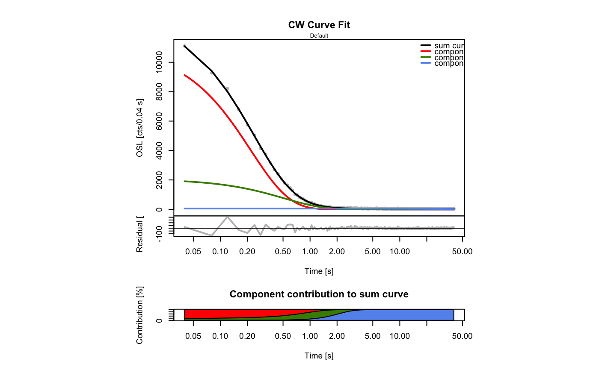

[beta version]fit_CWCurve.RdThe function determines the weighted least-squares estimates of the
component parameters of a CW-OSL signal for a given maximum number of
components and returns various component parameters. The fitting procedure
uses the nls function with the port algorithm.
fit_CWCurve(values, n.components.max, fit.failure_threshold = 5, fit.method = "port", fit.trace = FALSE, fit.calcError = FALSE, LED.power = 36, LED.wavelength = 470, cex.global = 0.6, sample_code = "Default", output.path, output.terminal = TRUE, output.terminalAdvanced = TRUE, plot = TRUE, ...)
| values | RLum.Data.Curve or data.frame (required): x, y data of measured values (time and counts). See examples. |
|---|---|
| n.components.max | vector (optional): maximum number of components that are to be used for fitting. The upper limit is 7. |
| fit.failure_threshold | vector (with default): limits the failed fitting attempts. |
| fit.method | character (with default):
select fit method, allowed values: |
| fit.trace | logical (with default): traces the fitting process on the terminal. |
| fit.calcError | logical (with default): calculate 1-sigma error range of components using confint |
| LED.power | numeric (with default): LED power (max.) used for intensity ramping in mW/cm^2. Note: The value is used for the calculation of the absolute photoionisation cross section. |
| LED.wavelength | numeric (with default): LED wavelength used for stimulation in nm. Note: The value is used for the calculation of the absolute photoionisation cross section. |
| cex.global | numeric (with default): global scaling factor. |
| sample_code | character (optional): sample code used for the plot and the optional output table (mtext). |
| output.path | character (optional): output path for table output containing the results of the fit. The file name is set automatically. If the file already exists in the directory, the values are appended. |
| output.terminal | logical (with default): terminal ouput with fitting results. |
| output.terminalAdvanced | logical (with default):
enhanced terminal output. Requires |
| plot | logical (with default): returns a plot of the fitted curves. |
| ... | further arguments and graphical parameters passed to plot. |
plot (optional)
the fitted CW-OSL curves are returned as plot.
table (optional)
an output table (*.csv) with parameters of the fitted components is
provided if the output.path is set.
RLum.Results
Beside the plot and table output options, an RLum.Results object is returned.
fit:
an nls object ($fit) for which generic R functions are
provided, e.g. summary, confint, profile. For more
details, see nls.
output.table:
a data.frame containing the summarised parameters including the error
component.contribution.matrix:
matrix containing the values for the component to sum contribution plot
($component.contribution.matrix).
Matrix structure:
Column 1 and 2: time and rev(time) values
Additional columns are used for the components, two for each component,
containing I0 and n0. The last columns cont. provide information on
the relative component contribution for each time interval including the row
sum for this values.
object
beside the plot and table output options, an RLum.Results object is returned.
fit:
an nls object ($fit) for which generic R functions
are provided, e.g. summary, confint, profile. For more
details, see nls.
output.table:
a data.frame containing the summarised parameters including the error
component.contribution.matrix: matrix containing the values
for the component to sum contribution plot ($component.contribution.matrix).
Matrix structure:
Column 1 and 2: time and rev(time) values
Additional columns are used for the components, two for each component,
containing I0 and n0. The last columns cont. provide information on
the relative component contribution for each time interval including the row
sum for this values.
Fitting function
The function for the CW-OSL fitting has the general form:
$$y = I0_{1}*\lambda_{1}*exp(-\lambda_1*x) + ,\ldots, + I0_{i}*\lambda_{i}*exp(-\lambda_i*x) $$
where \(0 < i < 8\)
and \(\lambda\) is the decay constant
and \(I0\) the intial number of trapped electrons.
(for the used equation cf. Boetter-Jensen et al., 2003, Eq. 2.31)
Start values
Start values are estimated automatically by fitting a linear function to the logarithmized input data set. Currently, there is no option to manually provide start parameters.
Goodness of fit
The goodness of the fit is given as pseudoR^2 value (pseudo coefficient of determination). According to Lave (1970), the value is calculated as:
$$pseudoR^2 = 1 - RSS/TSS$$
where \(RSS = Residual~Sum~of~Squares\)
and \(TSS = Total~Sum~of~Squares\)
Error of fitted component parameters
The 1-sigma error for the components is calculated using the function confint. Due to considerable calculation time, this option is deactived by default. In addition, the error for the components can be estimated by using internal R functions like summary. See the nls help page for more information.
For details on the nonlinear regression in R, see Ritz & Streibig (2008).
Beta version - This function has not been properly tested yet and should therefore not be used for publication purposes!
The pseudo-R^2 may not be the best parameter to describe the goodness of the
fit. The trade off between the n.components and the pseudo-R^2 value
is currently not considered.
The function does not ensure that the fitting procedure has reached a global minimum rather than a local minimum!
0.5.2
Boetter-Jensen, L., McKeever, S.W.S., Wintle, A.G., 2003. Optically Stimulated Luminescence Dosimetry. Elsevier Science B.V.
Lave, C.A.T., 1970. The Demand for Urban Mass Transportation. The Review of Economics and Statistics, 52 (3), 320-323.
Ritz, C. & Streibig, J.C., 2008. Nonlinear Regression with R. In: R. Gentleman, K. Hornik, G. Parmigiani, eds., Springer, p. 150.
fit_LMCurve, plot,nls, RLum.Data.Curve, RLum.Results, get_RLum, minpack.lm::nlsLM
##load data data(ExampleData.CW_OSL_Curve, envir = environment()) ##fit data fit <- fit_CWCurve(values = ExampleData.CW_OSL_Curve, main = "CW Curve Fit", n.components.max = 4, log = "x")#> #> [fit_CWCurve()] #> #> Fitting was finally done using a 3-component function (max=4): #> ------------------------------------------------------------------------------ #> y ~ I0.1 * lambda.1 * exp(-lambda.1 * x) + I0.2 * lambda.2 * exp(-lambda.2 * x) + I0.3 * lambda.3 * exp(-lambda.3 * x) #> #> I0 I0.error lambda lambda.error cs cs.rel #> c1 2387.617 NA 4.59053972 NA 5.389396e-17 1.0000 #> c2 1053.491 NA 1.95936444 NA 2.300337e-17 0.4268 #> c3 2816.630 NA 0.02054734 NA 2.412303e-19 0.0045 #> ------------------------------------------------------------------------------ #> pseudo-R^2 = 0.9995